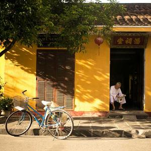
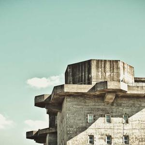
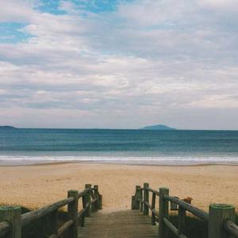
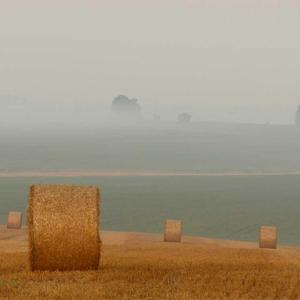
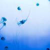

最近在做一个关于城市光影的设计项目，灵感来源于晚上的街道。下班路上的霓虹灯真的太迷人了。#设计 #城市
432 赞
28 评论
15 分享
UX 设计师 / 摄影爱好者 / 咖啡重度依赖症 ☕️ | 专注于创造简单而有意义的产品。📍 上海








最近在做一个关于城市光影的设计项目，灵感来源于晚上的街道。下班路上的霓虹灯真的太迷人了。#设计 #城市
终于打卡了这家传说中的网红咖啡店，排队两小时，值得！拿铁的拉花很有水平。
周末去郊外徒步，空气真的很清新，远离了城市的喧嚣。